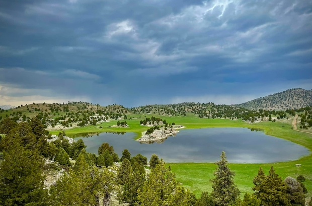

Kocayayla Gölü
Böğrüdelik yayla yerinin batısında yer almaktadır. Güneydoğusunda Kocayaran tepesi yer alır. (1982) özellikle yağışların çok fazla olduğu yıllarda yaz mevsiminde sular çekilmez ve yüzmesi de çok güzel olmaktadır. Kurak geçen yıllarda özellikle yaz döneminde sular çekilebilmektedir. Dağlar arasında bulunan bu göl alanını ardıç kokuları arasında gezmek ve burada dinlenmek unutulmaz bir anı olarak kalacaktır. Yapraklı Baraj Gölü9. Cumhurbaşkanımızın rahmetli Turgut ÖZAL'ın çabalarıyla gerçekleşmiş çok güzel bir eserdir. Gölhisar - İbecik su yolu üzerinde Kısık mevkiinde bulunur. 1991 yılında yapımı tamamlanmıştır. Baraj bölgedeki yüksek dağlara yağan kar ve yağmur suları ile beslenmektedir. Baraj sulama amaçlı yapılmıştır. Başta Gölhisar ovası ve Acıpayam ovasını sular. Barajın su hacmi 110.000 m3'tür 130 km.'lik bir sulama kanalı, drenaj uzunluğu 98 km, açık kanal ise 58 km'dir.